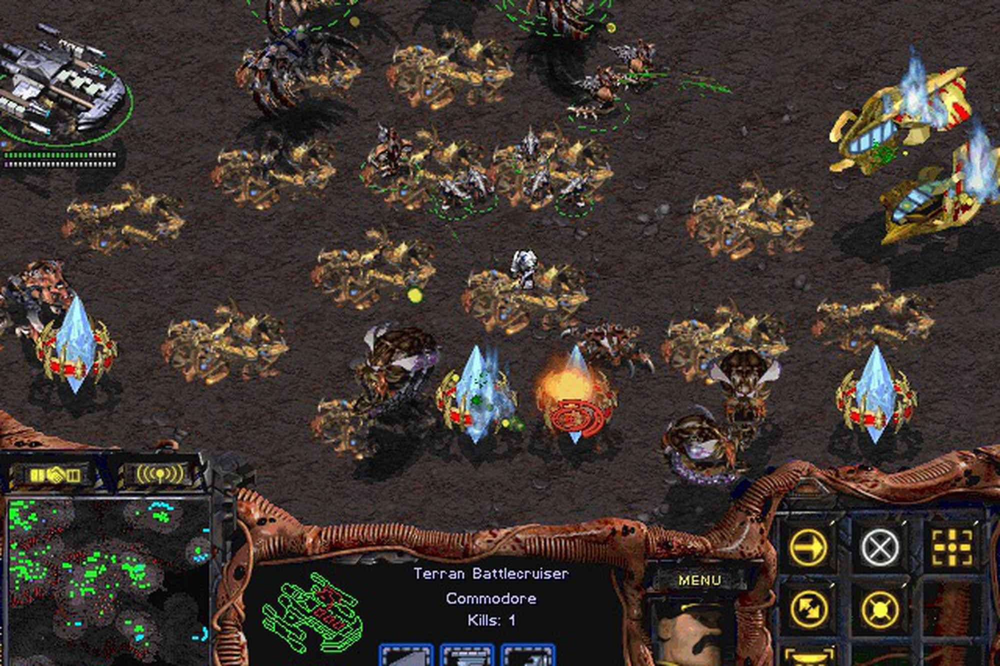

History of the Game

StarCraft is a real-time strategy (RTS) game developed and published by Blizzard Entertainment. It was first released for Microsoft Windows on March 31, 1998, and quickly became one of the most influential and popular games in the RTS genre. The game was later released for Mac OS and Nintendo 64.
The story of StarCraft is set in a distant part of the Milky Way galaxy known as the Koprulu Sector. The game features three distinct playable factions, each with its own unique units and characteristics:
- Terran: The Terrans are a resourceful and adaptive human faction. They are the descendants of a failed colonization expedition launched from Earth centuries ago. As relative newcomers to the Koprulu Sector, they rely on a mix of advanced technology and tenacity to survive and flourish.
- Zerg: The Zerg are a terrifying and insectoid alien race. They are known for their swarming tactics and adaptability. Led by the cunning and powerful Queen of Blades, the Zerg aim to assimilate and consume all other life forms in their path.
- Protoss: The Protoss are an ancient and advanced alien race. They possess powerful psionic abilities and advanced technology. Their society is based on a strict hierarchical system, and they view themselves as the "Protectors of the Universe."
The game's single-player campaign allows players to experience the storylines of each faction, delving into their unique perspectives and objectives. The campaigns are rich in lore and offer exciting missions and challenges. StarCraft's multiplayer mode has been a major factor in its long-lasting popularity. Players from around the world can compete against each other in intense strategic battles. The game's competitive scene has seen numerous professional players, tournaments, and championships. Due to its well-balanced gameplay, compelling storyline, and strategic depth, StarCraft has become an enduring classic and a hallmark of the RTS genre. It has also inspired several expansions and sequels, with StarCraft II being released in 2010. The success of StarCraft and its impact on the gaming industry led to the development of the real-time strategy esports scene, playing a crucial role in popularizing competitive gaming on a global scale. The game's legacy continues to be felt in the gaming community to this day.
Rules of Game Play
The Rules of Game Play in StarCraft are fundamental guidelines that players must follow during matches to ensure fair and competitive gameplay. The game is a real-time strategy (RTS) where players control one of the three factions (Terran, Zerg, or Protoss) and engage in battles to outmaneuver and defeat their opponents. Here are the key rules of StarCraft gameplay:
- Resource Management : Players must gather resources to build structures and produce units. There are two primary resources in the game: minerals and vespene gas. Players must strategically manage their resource gathering to maintain a steady economy and support their army.
- Base Building : Each player starts with a Command Center, Hatchery, or Nexus, which serves as the central hub of their base. Players expand their base by constructing additional structures, including supply depots, pylons, and overlords, which increase their unit production capacity.
- Unit Production : Players can produce units from specific structures unique to their chosen faction. Units have different abilities, strengths, and weaknesses, requiring players to carefully choose their unit compositions and tactics.
- Upgrades : Players can research upgrades to enhance the abilities and effectiveness of their units. Upgrades can improve attack damage, armor, speed, and more. Players must choose upgrades wisely to gain an advantage over their opponents.
- Map Control : The game's maps consist of various regions and strategic points. Players must scout and control these locations to gain a tactical advantage, secure resources, and deny their opponents' expansion.
- Fog of War : The game uses a "fog of war" system, meaning players can only see areas of the map that their units have explored. Effective scouting and map awareness are crucial to stay informed about the opponent's movements and strategies.
- Micro and Macro Management : Successful players must balance micro-management (controlling individual units during battles) and macro-management (managing economy and production). Skilled players can execute precise unit movements and control in intense battles while simultaneously maintaining a robust economy and army production.
The rules of StarCraft's gameplay provide a challenging and engaging experience for players, making it one of the most celebrated and competitive RTS games in history. Mastering these rules and developing effective strategies are essential to becoming a skilled StarCraft player.
Tips and Strategies for Winning
- Scouting: Keep a close eye on your opponent's base and expansions. Gathering information about their army composition and tech choices will help you prepare and counter their strategies effectively.
- Economy Management: Balance your resource gathering and spending. A strong economy allows you to produce more units and research upgrades, giving you an advantage in the long run.
- Map Control: Secure key strategic points on the map to gain control and deny your opponent's resources. Controlling high ground and choke points can provide a tactical advantage in battles.
- Unit Composition: Choose a well-balanced unit composition that complements your faction's strengths and counters your opponent's units. Mix and match units with different abilities to create a formidable army.
- Harassment: Use hit-and-run tactics to harass your opponent's economy and force them to divert resources from their main army. Harassment can disrupt their strategy and slow down their production.
- Expansion and Defenses: Expand to additional bases to increase your resource income. However, remember to defend your expansions with appropriate defenses to prevent them from being easily attacked.
- Upgrades: Prioritize researching upgrades for your units. Upgrades can significantly improve the combat effectiveness of your army and give you an edge in battles.
- Macro and Micro Management: Develop good macro-management skills to maintain a strong economy and produce units efficiently. Simultaneously, practice micro-management to control individual units during battles, optimizing their movements and attacks.
- Adaptability: Be ready to adjust your strategy based on your opponent's actions. If your initial plan is not working, don't hesitate to switch tactics and adapt to the situation.